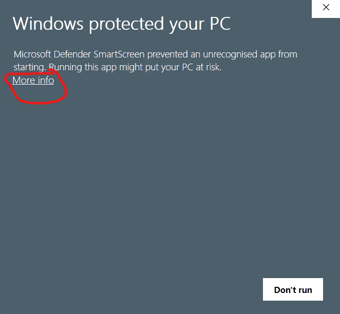
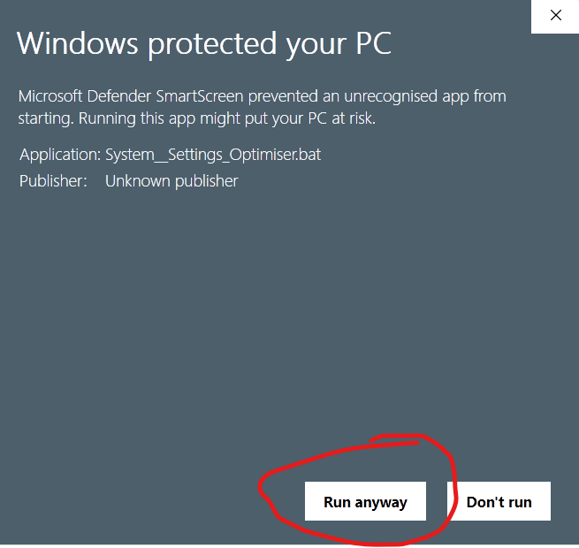

Download: Windows Optimiser

What does the program do?
The Hackboto Tech Tips Windows Optimiser is a free program that removes old and unnecessary system files such as error logs, previous updates, etc from your computer system, as well as old unnecessary files from your user account such as old application logs, and other junk files that will eat up your storage space and cause performance issues.
Downloading the program
You can download the Hackboto Tech Tips Windows Optimiser using the download button below, this should start the download process.
Download Windows_Optimiser.batThe latest version is 1.3.0 (last updated: 28/02/2025)
How do I use the program?
Running the program.
To Run the Windows Optimiser you need to double click on the "Windows_Optimiser.bat" file you have downloaded.
Sometimes the program will be blocked by the built-in antivirus, this is because the program was not created on your computer and has been downloaded off the internet, if you see this warning you will need to click on "More info".
After clicking on "More info" you will need to click on "Run anyway" to continue.
By this stage the Windows Optimiser should be running, you will see two functions which are the User Account Optimiser and the Computer System Optimiser.
Using the Optimise Computer System feature.
The Optimise Computer System feature will target your computer system specifically, it will restore the optimal stability and performance by verifying and repairing your Windows component store, removing old driver leftovers, clearing the system of temporary files, checking for file system errors, clearing old error logs, etc to boost the performance of your computer system and to restore the stability.
The Optimise Computer System will require administrative rights, this means that you will need to provide your administrative credentials when you are asked to, the Computer Optimiser will also restart your computer once it has concluded so bear this in mind when you run it.
Using the Optimise User Account feature.
The Optimise User Account feature will specifically target your user account, it will remove any old junk files that have accumulated, clear your jump-lists and file history to improve performance, etc.
This feature will not restart your PC and does not require any administrative privileges as it will not make any changes to your computer system and will only optimise your user account, therefore administrative privileges are not required for this feature.
Where can I find the legacy computer optimiser scripts?
The old Computer Optimiser Scripts have been replaced by the Hackboto Tech Tips Windows Optimiser application, this decision has been made to improve the overall user experience, however the decision has been made to keep the old legacy computer optimiser scripts available to download.
You can view the download page for the legacy computer optimiser scripts by clicking on the button below, however you should bear in mind that the legacy version is now deprecated and will not be receiving any future updates or bug fixes.
Legacy Computer Optimiser ScriptsPage Updated: 28/02/2025
Page Author: Hackboto